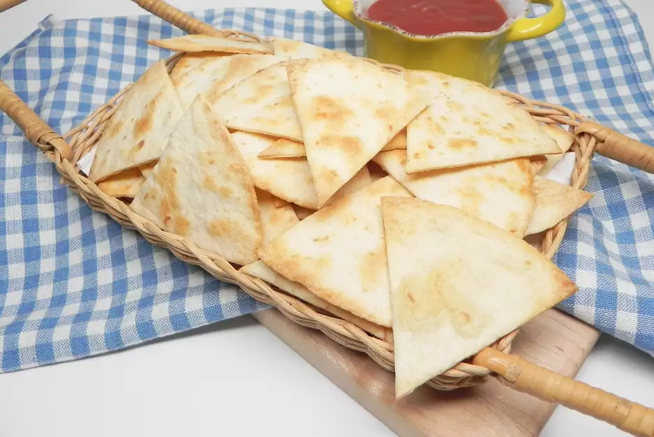

tortilla-chips

Description
Homemade baked tortilla chips that are very easy to make.
ingredients
- 1 (12 ounce) package flour tortillas
- 1 drizzle olive oil
- 1 pinch salt to taste
steps
- Preheat the oven to 350 degrees F (175 degrees C.)
- Cut tortillas into 6 wedges each. Place on a baking sheet and drizzle with olive oil. Season with salt.
- Bake in the preheated oven until golden and crisp, about 5 minutes.